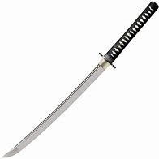
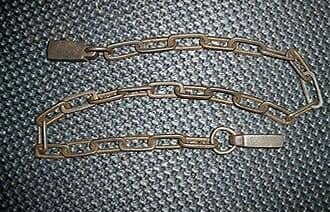
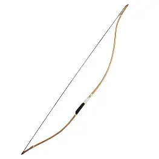
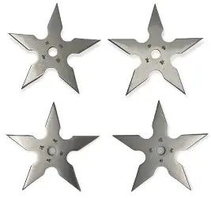

Katanas are among the most iconic expressions of Japanese craftsmanship, defined by their elegant curvature, single-edged blade, and refined balance between form and function. Traditionally forged using layered steel and meticulous heating and folding techniques, each katana reflects both technical precision and artistic intent. The visible temper line, or hamon, is not only a mark of the blade’s strength but also a signature of the smith’s skill, giving every sword a unique visual identity. Clean lines, subtle contrast, and careful detailing embody the broader principles of Japanese design—simplicity, harmony, and purposeful beauty.
Beyond their physical structure, katanas carry deep cultural significance rooted in discipline, respect, and mastery. Historically associated with the samurai, the katana symbolized both responsibility and personal honor, serving as more than just a weapon. In modern design contexts, it often represents focus, control, and quiet strength—qualities that resonate strongly in Japanese-inspired web aesthetics. When incorporated visually, katanas are typically presented with restraint and balance, allowing their form to speak for itself while contributing to an overall sense of clarity, intention, and refined minimalism.

The kusari-fundo is a traditional Japanese weapon composed of a length of chain with weighted ends, valued for its adaptability, precision, and understated design. Unlike rigid weapons, its flexible form allows for fluid movement, making it effective for controlling distance, redirecting force, and responding dynamically to an opponent’s actions. Its construction is simple yet intentional, often consisting of clean metal links and balanced weights that reflect a focus on efficiency rather than ornamentation. This minimal structure aligns closely with Japanese design sensibilities, where function and form exist in quiet harmony.
Culturally, the kusari-fundo represents subtle control and strategic thinking rather than direct confrontation. It was historically used in situations that required restraint and technique, emphasizing skill over brute strength. In a design context, it evokes themes of connection, flow, and adaptability, often symbolizing unseen strength and measured response. When incorporated into visual design, it is best presented with clarity and restraint, allowing the rhythm of its chain and the balance of its weights to reinforce a sense of calm precision and thoughtful control.

The yumi is a traditional Japanese longbow, instantly recognizable by its tall, asymmetrical form, with the grip positioned below center. Crafted from layered materials such as bamboo and wood, it reflects a deep understanding of balance, flexibility, and controlled tension. Its elongated silhouette and natural textures embody a refined simplicity, where every curve and proportion serves a purpose. In Japanese design culture, the yumi aligns with principles of elegance and restraint, presenting strength through form rather than ornamentation, and emphasizing harmony between the user, the tool, and the surrounding space.
Beyond its physical presence, the yumi carries strong cultural associations with discipline, mindfulness, and precision. Central to the practice of kyūdō, or “the way of the bow,” it represents more than accuracy—it reflects a pursuit of inner calm, focus, and intentional movement. In modern design contexts, the yumi can symbolize clarity, direction, and quiet strength, making it a powerful visual element when used thoughtfully. Its presence encourages balance and spacing in composition, reinforcing a sense of openness and controlled energy that complements minimalist and purpose-driven design aesthetics.

Shuriken are small, precisely crafted implements known for their balanced form and understated efficiency. Often recognized by their star-like silhouettes or slender spike shapes, they are designed for smooth release and controlled trajectory rather than brute force. In terms of visual language, shuriken embody symmetry, sharp geometry, and clarity of purpose—qualities that align closely with Japanese design principles. Their clean edges and radial balance make them naturally suited to minimalist compositions, where even a simple outline can convey motion, direction, and intent.
Beyond their physical form, shuriken represent focus, discipline, and precision. Historically associated with stealth and strategy, they emphasize timing and accuracy over visibility or excess. In modern design contexts, they can symbolize subtle strength and refined technique, contributing to layouts that value intention and restraint. When incorporated into Japanese-inspired web design, shuriken are most effective when used sparingly—appearing as crisp accents or guiding motifs that reinforce structure, rhythm, and a sense of controlled energy without overwhelming the overall aesthetic.